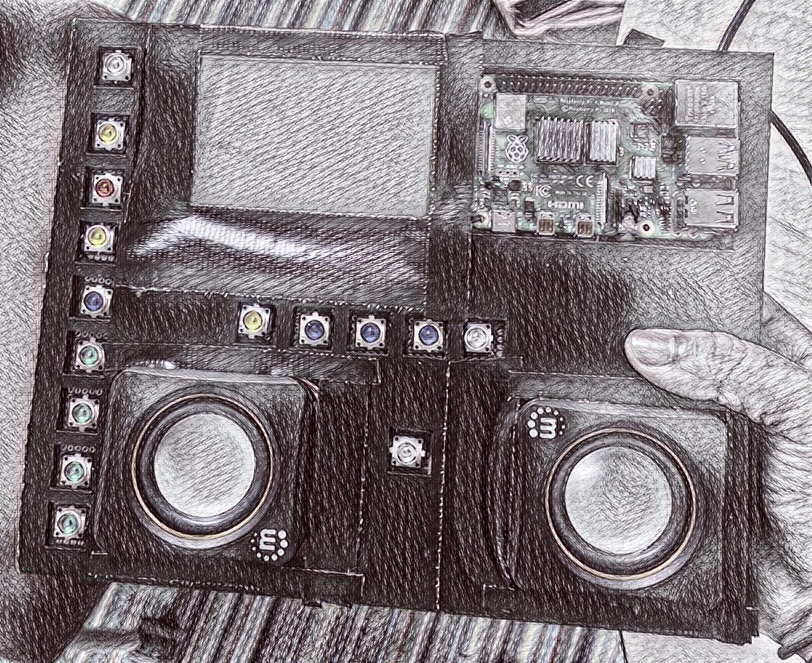
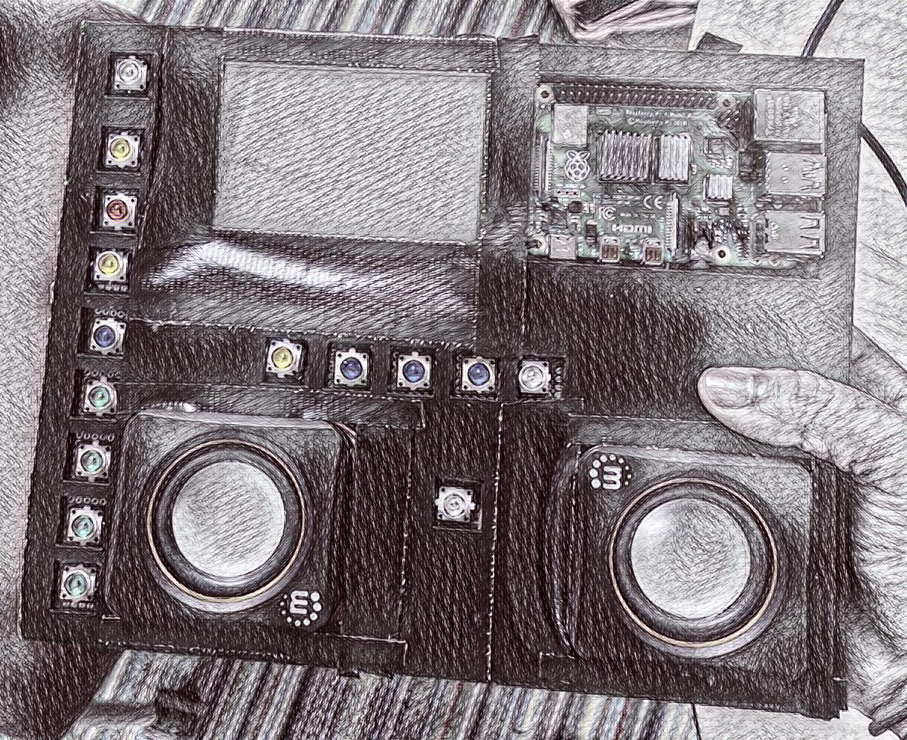

I have worked on many different
code projects over the last few semesters, here are a my few of my favorites!
A project I am particularly proud of is my hackintosh project
which I built with the help of Opencore
and Dell specification sheets.
My most recent project was an audio sampler driven by a Raspberry Pi utilizing Python code for programming logic, and HTML/CSS for creating a user interface.
This project was completed over the course of around 8 weeks and required intensive planning, scheduling, and ingenuity.
There were many different ways we creatively solved our problems in hardware and software. Our software work was based on
aubio's work primarily, with extra inspiration from
rubber band audio's code base.
Using this pinout diagram we were able to map our
custom hardware configuration to the proper GPIO pins labeled in the software.
If you are interested in how I contributed to this project or have any questions feel free to send me an email. Linked here is my
github.

I have worked on many different code projects over the last few semesters, here are a my few of my favorites! A project I am particularly proud of is my hackintosh project which I built with the help of Opencore and Dell specification sheets. My most recent project was an audio sampler driven by a Raspberry Pi utilizing Python code for programming logic, and HTML/CSS for creating a user interface.
This project was completed over the course of around 8 weeks and required intensive planning, scheduling, and ingenuity. There were many different ways we creatively solved our problems in hardware and software. Our software work was based on aubio's work primarily, with extra inspiration from rubber band audio's code base. Using this pinout diagram we were able to map our custom hardware configuration to the proper GPIO pins labeled in the software. If you are interested in how I contributed to this project or have any questions feel free to send me an email. Linked here is my github.
